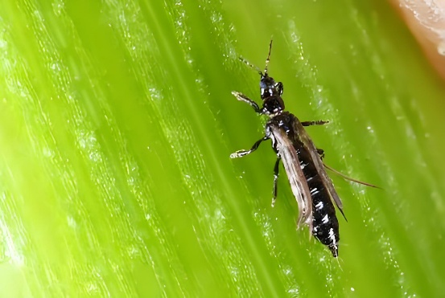
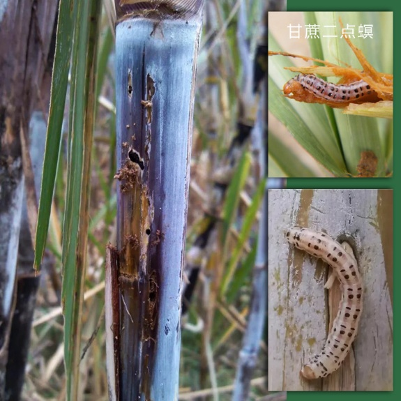
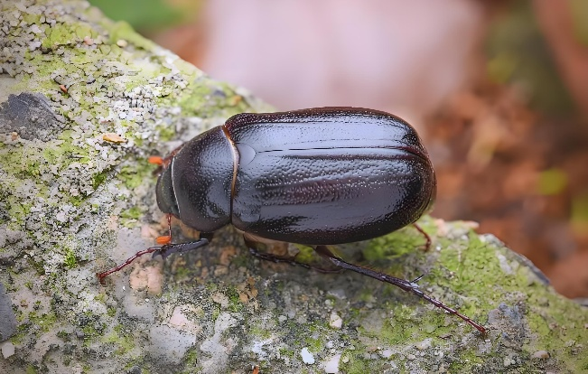
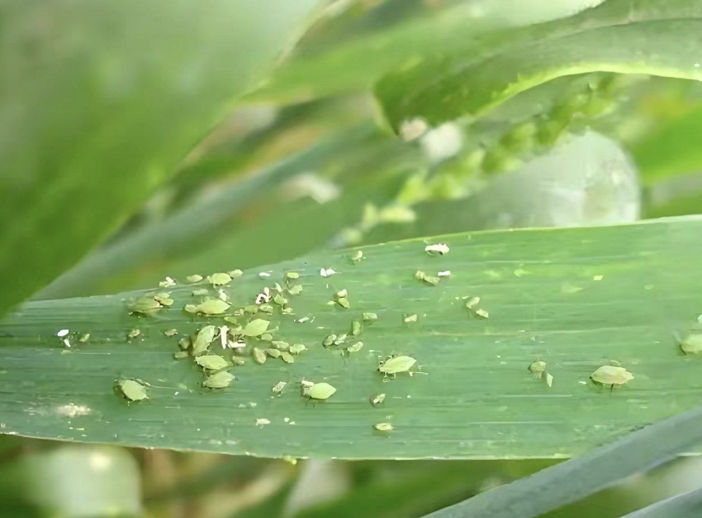

×


病虫样子成虫体长1.2~1.4毫米，体暗褐色至黑褐色，翅狭长透明，边缘生有长缨毛，体型微小，行动敏捷。
危害部位与症状以成虫、若虫隐蔽在甘蔗心叶中锉吸汁液，受害叶片出现黄白色褪绿条斑，叶尖卷缩干枯，严重时心叶无法展开，呈“牛尾巴”状，植株矮黄，影响甘蔗拔节生长。
农业防治：加强田间管理，合理排灌，促进甘蔗早生快发，加快心叶展开，减少蓟马栖息场所。
化学防治：卷叶率达5%以上时，选用25%噻虫嗪水分散粒剂、1.8%阿维菌素乳油或乙基多杀菌素，重点对心叶喷雾防治。

病虫样子成虫多为灰褐色蛾子，幼虫多为淡黄色或黄褐色，头部赤褐色，体节分明，常见种类有二点螟、黄螟、条螟。
危害部位与症状主要蛀食甘蔗茎秆，苗期危害造成枯心苗；中后期蛀入茎内，破坏输导组织，造成枯梢、断尾，茎秆遇风易折断，蛀孔处常可见虫粪和流胶，严重影响甘蔗产量和糖分积累。
农业防治：选用无虫种苗，收获后及时清理残茎枯梢，减少越冬虫源。
生物防治：螟卵盛期释放赤眼蜂，或利用红蚂蚁捕食幼虫。
化学防治：螟卵盛孵期，用氯虫苯甲酰胺、杀虫双等药剂淋根或喷雾；大培土时施入颗粒剂进行根区防护。

病虫样子成虫多为棕褐色或黑色甲虫，体表坚硬有光泽，幼虫为乳白色蛴螬，呈C形弯曲，体型肥硕。
危害部位与症状成虫咬食甘蔗基部，形成半球形缺口，造成枯心苗；幼虫在地下取食蔗根、蛀食蔗茎地下部，导致蔗株生长停滞、叶片黄萎，遇风易倒伏，宿根蔗发苗率显著下降。
农业防治：农业防治：水旱轮作（如与花生、甘薯轮作），减少土壤中虫源；收获后翻耕土壤，暴露越冬幼虫。
物理防治：4-6月用黑光灯诱杀成虫。
化学防治：种植或大培土时，每亩用3%辛硫磷颗粒剂4-5公斤施于蔗头处；受害严重时，在蔗株基部钻孔灌注杀虫剂药液毒杀地下幼虫。

病虫样子无翅孤雌蚜卵圆形，体长1.9~2.4毫米，体表覆盖厚蜡粉或蜡丝，呈白色絮状；有翅蚜体型稍小，具透明翅。
危害部位与症状群集在甘蔗叶片背面、叶鞘及茎秆上吸食汁液，导致叶片褪绿黄化、卷曲畸形；分泌的蜜露会诱发煤烟病，影响光合作用，造成植株矮缩、产量下降。
农业防治：及时剥除枯老叶鞘，改善蔗田通风透光条件，减少蚜虫繁殖环境。
生物防治：保护瓢虫、草蛉、食蚜蝇等天敌。
化学防治：点片发生时，喷施40%乐果乳油1000倍液或50%抗蚜威可湿性粉剂2000倍液，重点喷叶片背面。